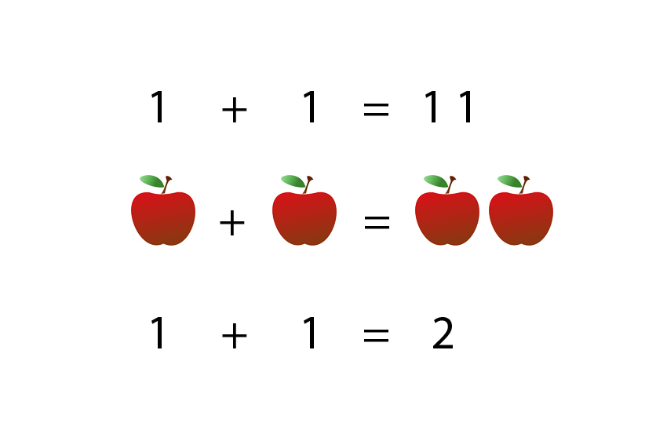
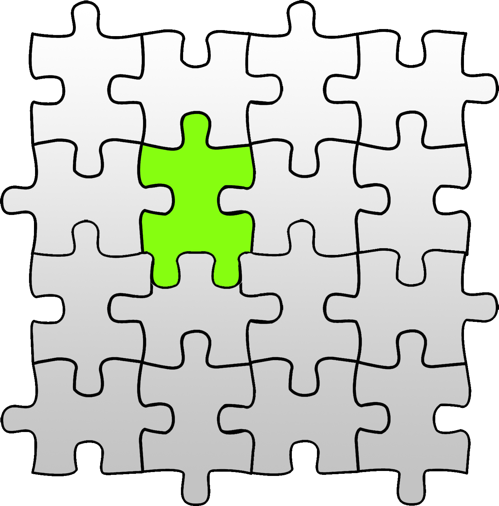
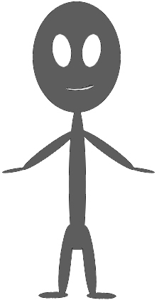
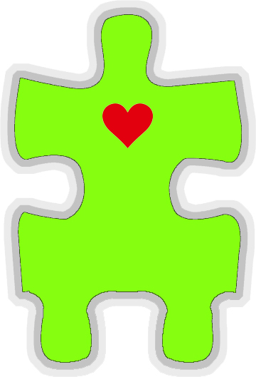

Değişen Kabuk
Merhaba meraklı dostlar,
İnsanlık, geçmişimizde değişimin bu kadar yoğun, hızlı ve global olduğu bir zaman görmedi.
Muhakkak her değişim ve dönüşüm kendi içerisinde az ya da çok zorluklarla olmuştur. Ancak hiç biri insanı bedeninden bu derece ayrıştırmaya yönelik olmamıştır…
. Eğitim ; a ; Doğduğumuz andan itibaren hem öğrenci hem öğretmen olan davranış modelimiz sayesinde, bilmediklerimizi öğreniyor bildiklerimizi de aktarıyoruz. Okul çağına geldiğimizde okul denilen kurumlar ve sistem sayesinde öğrenme hızımız ve şeklimiz değişmeye başlıyor. Bir nevi programlanmaya çalışılan robotlar gibi eğitiliyoruz. Sistem her ne kadar özgürlüğü savunsa da aslında tamamen irademiz dışında gönüllü köleliğe rağzı olup sistemin devamlılığını sağlıyoruz. Bir süre sonra da sistem içerisindeki doğal olduğunu sanmaya başladığımız puanlamalar sayesinde (ismini siz koyun) statüler edinip yaşama devam ediyoruz !
. Eğitim ; b ; Eğitilmemiz için almamız gereken bilgi (ezber) son 20 yıldır bir insanın eğitim hayatına sığmayacak büyüklükte veri içermeye başlamıştır. Sonuçta branşlar artmış, meslekler ve hatta sadece bilgi bile alt başlıklar halinde ayrılmak zorunda kalmıştır. Bu durum hızlanarak ve artarak devam emektedir…
. Eğitim ; c ; İnternetin gelişmesi ve sosyal medyanın hayatımızın içine girmesiyle beraber, insan uzuvlarının fiziki sınırlarını neredeyse sınırsız mesafelere taşımıştır. Bu durum birçoğumuza devasa görünmez vücutlar kazandırmıştır…
. Eğitim ; a+b+c ; Artık yeni doğan bebeklerimiz fiziki bedenlerini ve dünyayı tanırken aynı zamanda görünmez vücutlarını ve dünyayı da tanımaya başlıyorlar. Eğitim dediğimiz süreç tahmin edilemeyecek hal almaya başlamıştır…

. . İnsan olmak ; a ; İnsanı diğer canlılardan ayıran temel özellik, soru sorma ve tatmin edici cevaplar arama becerisinin gelişmesidir. Bu özelliği o kadar gelişmiştir ki, edindiği cevaplar sayesinde algıladığı yaşamın formüllerini tanımlaya başlamıştır. Hatta “düşünüyorum o halde varım” diyebilmiştir.
. . İnsan olmak ; b ; Düşünce üretmek. Çok basit bir eylem gibi dursa da insanım diyen için hiç de kolay olmamıştır. ‘ Bu ne renk ‘ sorusunun cevabı renkleri bilen birisi için çok kolay olabilirken renk bilgisi yetersiz birisi için düşündürücü bir sorudur…
. . İnsan olmak ; c ; Bilme isteği içimizdeki bitmez tükenmez bir arzudur. Yaşamın kaynağı bile demek mümkün. Bilme durumu bir boşluğun doldurulma arzusundan başka bir şey değildir. Boş bardağın dolmasına, aç karnımızın doymasına, görmemize, duymamıza, v.s. bunlar gibi bir çok şeye, hatta yaşamın kendisine bile eş tutabilir. Bilmek ihtiyaç duyulan, arzulanan elde edilince tatmin yaratan yeni bilmelere yol açan durum diyebilirim. Bilme sonlandığında canlılar için ölüm, cansızlar için değişim, fikirler için sonuçlar oluşur diyebiliriz. Varlık devam ettiği sürece de bilme eylemi devam edecektir…
. . . Günümüzde big data denilen bilgi yığını, bilme eylemini yönetenler için hazine haline gelmiştir. Biliyorlar ki bununla her türlü eylemi hayata geçirmek çok kolaylaşmıştır. Reklam sektörü için muazzam bir kaynak. Çoğumuz konuşmalarımız arasında şunu ya da benzerlerini söyleriz “aklıma geldi ” . Gerçekten aklınıza mı geldi. Ben hiç sanmıyorum. O aklınıza gelen şey tam zamanında aklınızda beliriverdi demek çok daha doğru olacaktır.
Aklımıza geldiğini sandığımız şeylerin hemen hepsi (çoğunlukla) bizlere sunulan ” puzzle ” ‘ın parçalarını yavaş ve emin adımlarla bizlere çözdüren o ” üst akıl ” dediğimiz big data verisini ziyadesiyle kullananların yaptıklarından başka bir şey olmadığını sanıyorum.

Bu sarmaldan kendimizi kurtarabilmek için her yöne bakabilme becerisine sahip olmamız ya da kendimizi bu konuda geliştirmemiz gerekmektedir. Çok zor olmasa da çaba gerektiren bir yaşam biçimi. Her zaman her sunulanı almayın, almasanız bile almış kadar inceleyin derim. Doğrulara biraz daha yaklaşabilmek için alternatif bakış açılarıyla olan biteni bilmeye çalışın.
Hem bilmeye çalışıp hem de alternatifleriyle hayata bakmaya çalışmak insanı bugüne kadar eşi benzeri görülmemiş bir çabanın içine sokuyor. Bu çabanın içinde bedenimiz çok hantal kalmaya başladı.

Yerimizden bile kalkmadan bir tık ile dünyanın öbür ucuyla iletişime geçerken parmaklarımız haricinde neredeyse kıpırdamadan yani bedenimizin en gelişmiş kas yığınlarına mesela bacaklarımıza hiç ihtiyacımız olmuyor. Kollarımızın da bu kadar uzun olmasına ihtiyacımız yok. Hatta büyükçe bir kafa cılız bir beden ihtiyacımızı görür sanki. Bu düşündürücü bir durum. Düşündürücü olmasının yanı sıra bedenlerimiz artık alarm veriyor. Doktorlar sağlığımız için hareketli yaşamı öneriyor. Önerinin sebebi hareketsizliğimizin tescilinden başka bir şey değil. Bir de sağlıklı beslenmeliyiz diye öneriler var. Sebep yine aynı. (dünyanın bazı coğrafyaları hariç)
Beynimizin arzuladığı yaşam biçimini artık bedenimiz kaldıramıyor, sanal alemlerin içinde kendisine yer bulmaya çalışıyor. İnsan, kabuk değişimine doğru hızlıca ilerliyor. Bedeni hiç umursamadan. Sanki olağan bir durum gibi. Bunu biraz sigara, alkol v.s. olan bağımlılığa benzetiyorum. Beynimiz, bağlı olduğu vücudunu bile bile tehlikeye atıyor. Yaptığının kendi sonunu da getireceğini bile bile durmuyor, duramıyor ve çoğunlukla da sonu iyi bitmiyor.
Şimdiki gidişatımızın sonucu da acaba böyle mi olacak. Yoksa bu farklı bir durum mu …?

Olan bitene biraz daha dikkatle baktığımızda, yapay zeka, nanoteknoloji ve benzerleri sayesinde yaşamın sadece beş duyumuzla algıladığımız dünya olmadığını anlayıp, daha farklı “kabuklarla” yeni maceralara atılacağımızı ön görebiliriz…
teşekkür ederim,
Devam edecek…
Not: 2018 yılında bbc.com haberine göre gelecekteki mükemmel insana dair haber
İlk yayın: https://pointpointblog.wordpress.com/2020/06/29/degisen-kabuk/